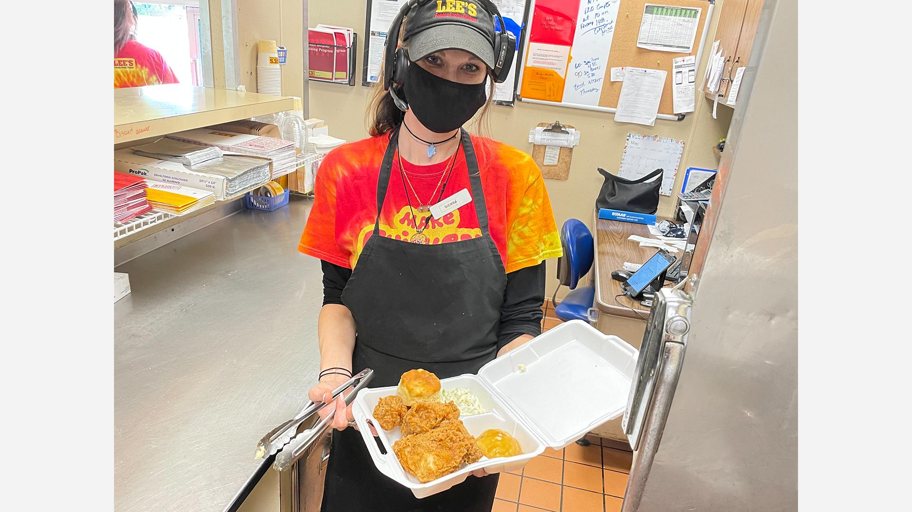

What’s New: Lee’s
Famous Recipe Chicken Restaurant is using a new conversational artificial
intelligence (AI) solution to increase the speed of service and shorten wait times in
their drive-thrus. The solution, created by Hi Auto, greets each drive-thru guest and
answers questions about the menu before taking and confirming their order.
“The automated AI drive-thru has impacted my business in a simple way. We
don't have customers waiting anymore. We greet them as soon as they get
to the board and the order is taken correctly. It's amazing to see the
level of accuracy with the voice recognition technology, which helps
speed up service. It can even suggest additional items based on the
order, which helps us increase our sales. If a person is running the
drive-thru, they may suggest a sale in one out of 20 orders. With Hi
Auto, it happens in every transaction where it's feasible. So, we see
improvements in our average check, service time and improvements in
consistency and customer service. And because the cashier is now less
stressed, she can focus on customer service as well. A less-burdened
employee will be a happier employee, and we want happy employees
interacting with our customers.”
–Chuck Doran, owner and operator of Lee’s Famous Recipe Chicken Restaurant in
Englewood, Ohio
Why It Matters: Last year,
drive-thru orders in the United States increased by 22% due to
the pandemic, accounting for 44% of all off-premises orders across the restaurant
industry. Meanwhile, average drive-thru times increased by nearly 30
seconds. More customers can lead to added stress on employees who must quickly
and accurately take and fulfill orders. By augmenting human employees with an AI
assistant, employees can focus on high-touch duties, including fulfilling the orders,
managing inventory and interacting with in-store customers.
“At Lee's, we met a team that puts its heart and soul into serving its customers,” said
Roy Baharav, chief executive officer and co-founder of Hi Auto. “We operationalized our
AI system based on what we learned from the owners, general managers and employees. They
have embraced the solution and within a short time began reaping the benefits. We are
now applying the process and lessons learned at additional customer sites.”
Employees from Lee’s Famous Recipe Chicken restaurants in
Ohio receive drive-thru orders via an artificial
intelligence assistant that contacts them through their
headsets. (Credit: Lee’s Famous Recipe Chicken)
Employees from Lee’s Famous Recipe Chicken restaurants in
Ohio receive drive-thru orders via an artificial
intelligence assistant that contacts them through their
headsets. (Credit: Lee’s Famous Recipe Chicken)

Employees from Lee’s Famous Recipe Chicken restaurants in
Ohio receive drive-thru orders via an artificial
intelligence assistant that contacts them through their
headsets. (Credit: Lee’s Famous Recipe Chicken)
Employees from Lee’s Famous Recipe Chicken restaurants in
Ohio receive drive-thru orders via an artificial
intelligence assistant that contacts them through their
headsets. (Credit: Lee’s Famous Recipe Chicken)
At Lee’s Famous Recipe Chicken restaurants in Ohio,
drive-thru guests place orders using a high-tech
assistant powered by Intel's artificial intelligence
technology. (Credit: Lee’s Famous Recipe Chicken)
At Lee’s Famous Recipe Chicken restaurants in Ohio,
drive-thru guests place orders using a high-tech assistant
powered by Intel's artificial intelligence technology.
(Credit: Lee’s Famous Recipe Chicken)
At Lee’s Famous Recipe Chicken restaurants in Ohio,
drive-thru guests place orders using a high-tech
assistant powered by Intel's artificial intelligence
technology. (Credit: Lee’s Famous Recipe Chicken)
At Lee’s Famous Recipe Chicken restaurants in Ohio,
drive-thru guests place orders using a high-tech assistant
powered by Intel's artificial intelligence technology.
(Credit: Lee’s Famous Recipe Chicken)
How It Works: Created by Hi Auto, the AI solution greets the guest, answers questions, suggests
menu items and enters the orders into the point-of-sale system. The technology isolates
the consumer’s speech to ensure order accuracy and converses like a person. It is always
polite, and if the guest asks an unrelated question or asks for something not on the
menu, the AI automatically switches to a Lee’s employee to intervene. It also seamlessly
integrates with Lee’s existing employee headset system, allowing employees to provide
real-time updates to inventory, as needed. The AI solution runs on Intel® Xeon®
processors in the cloud and Intel® NUC.
“We’re increasingly seeing restaurants interested in leveraging AI to deliver actionable
data and personalize customer experiences,” said Joe Jensen, vice president of the
Internet of Things Group and general manager of Retail, Banking, Hospitality and
Education at Intel. “With Hi Auto’s solution powered by Intel® technology, quick-service
restaurants (QSRs) can help their employees be more productive while increasing customer
satisfaction and, ultimately, their bottom line.”
What Comes Next: Lee’s is planning
to deploy Hi Auto’s conversational AI in additional drive-thru locations. Pilots with
the largest QSRs are already underway. And Hi Auto’s engineers are adding Spanish
language capabilities to the solution, which is available as an Intel
IoT Market Ready Solution.
More Context: Artificial Intelligence at Intel | Intel
Hospitality | How Lee’s Famous Recipe Overcame Hiring
Crisis with Conversational AI (Webinar)
Intel Customer Stories: Intel Customer Spotlight on Intel.com | Customer
Stories on Intel Newsroom